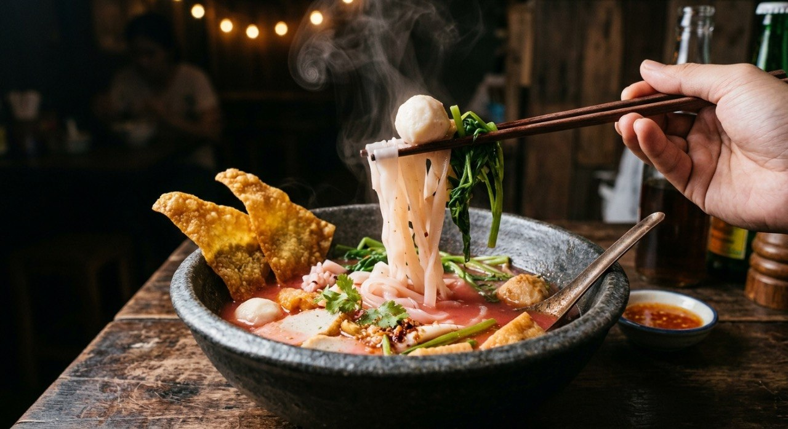

The noodle soup dyed pink by fermented tofu — sour first, then salty, fish balls and crisp squid swimming in a clean herb broth.

เย็นตาโฟ is the noodle shop's oddity — a bowl the colour of bubblegum, and the colour is the whole identity. The pink comes from ซอสเย็นตาโฟ, the sauce built on เต้าหู้ยี้, red fermented tofu, blended with ketchup, chilli sauce, vinegar and red chillies. The Bloggang source preserves four published recipes for the sauce, and they all agree on the framework: ketchup for the base, chillies for the heat, fermented tofu for the funk — then each kitchen adjusts.
The broth underneath stays clean and herbal: coriander roots, peppercorns, garlic, onion, radish — and Wongnai's signature, ปลาหมึกแห้งย่างไฟ, dried squid charred over the flame before it goes in, giving the stock its faint smoke. Aroifin's shop version adds the Chinese medicine shelf — goji berries, เง็กเต็ง, ฮวยซัว — and pickled garlic with its brine, then seasons with white soy, Maggi and coconut sugar.
The assembly order is where the sources part, and Aroifin states its rule as a taste profile: "sour first, then salty, a little sweet — that's real yen ta fo." Its technique: stir the pink sauce through the noodles before the broth goes on, so every strand takes the colour. Wongnai spoons the sauce on top. Either way the bowl must blush.
| Thai | English | Amount |
|---|---|---|
| เต้าหู้ยี้ | Red fermented tofu | 100 g |
| น้ำเต้าหู้ยี้ | Tofu brine | 2 tbsp |
| ซอสมะเขือเทศ | Ketchup | 2 tbsp |
| ซอสพริก | Chilli sauce | 2 tbsp |
| น้ำกระเทียมดอง | Pickled garlic brine | 1 tbsp |
| พริกชี้ฟ้าแดง | Red spur chillies, seeded | 100 g |
| น้ำส้มสายชู | Vinegar | 50 ml |
| น้ำมันงา | Sesame oil | 1 tsp |
| ซีอิ๊วขาว | White soy | 1 tbsp |
| น้ำตาลทราย / เกลือป่น | Sugar / salt | 1 tbsp / ½ tsp |
| น้ำเปล่า | Water | 50 ml |
The broth: 6 cups water, 1 tsp salt, 3 lumps rock sugar, 4 coriander roots, 10 peppercorns, 2 crushed garlic cloves, 1–2 onions, 1 tbsp white soy, 1 radish, 2 dried squid charred over the flame — simmered 45 minutes, skimmed.
The sauce formula. The Bloggang roundup keeps four versions: ketchup with red and yellow chilli sauces; ketchup with sriracha and six cubes of fermented tofu; versions with oyster sauce and sugar. All pink, all different. Wongnai's blend above is the modern shop standard.
Sauce in the bowl or on the noodles. Aroifin stirs the sauce through the noodles before the broth so every strand colours; Wongnai spoons it on top. Same taste, different blush.
The broth's aromatics. Wongnai leans on charred dried squid; Aroifin on the Chinese herbs (goji, เง็กเต็ง, ฮวยซัว) and pickled garlic. The squid smoke is the classic street note.
Sweetener. Wongnai's rock sugar versus Aroifin's coconut sugar. Both keep the broth just shy of sweet.
What swims in it. The topping list is a menu: fish balls, pork blood, crisp squid, fried tofu, fried wonton. Every shop picks its own combination — the sauce and the water spinach are the only constants.
This recipe is translated from the following Thai-language sources. Where they disagree, we've said so.
1. Wongnai — "วิธีทำ ก๋วยเตี๋ยวเย็นตาโฟ เมนูเส้นเครื่องแน่น รสเด็ดพร้อมเปิดร้าน!" (the recipe used here) — wongnai.com
2. Aroifin — "วิธีทำ ก๋วยเตี๋ยวเย็นตาโฟ เครื่องแน่น น้ำซุปเข้มข้น" (Chinese-herb broth + the sour-first rule, Oct 2025) — aroifin.com
3. Bloggang (jazzy-bong) — "รวมสูตรซอสเย็นตาโฟ 4 สูตร" (the four published sauce variants) — bloggang.com